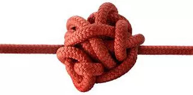

Relações que Permeiam a Arte Marcial
Por Thomas Pinheiro
Vai passando o tempo e amadurecem muito os pontos de vista sobre a prática, praticantes, e ditos mestres. Qual a importância de treinar, ensinar? Ganhar dinheiro? Ganhar notoriedade? Explorar a figura humana? Satisfação de fazer algo, de aprender algo que se pensava impossível?... A ligação entre o aluno e o professor só se concretiza quando há aspectos de benefício para que ambos alcancem objetivos. O aluno quer aprender e o mestre quer alguém que goste do que ele ensina, mas espontâneo, verdadeiro.
Arte marcial é um aprendizado constante de auto controle do próprio corpo envolvendo sua psiquê, e talvez por isso mesmo abre portas para um uso incorreto ... muitas vezes de consentimento entre professor e aluno. A idealização da figura suprema, do poder absoluto, de um controle de grupo, para muitos é a satisfação plena.
Torna-se perigoso à medida em que um individuo como aluno se dispõe a cumprir tudo que lhe é passado, sem sequer questionar, não me refiro a treino técnico mas sim ao que permeia a relação. Utilizar ou submeter o aluno como escravo de suas vontades, sempre tudo com aquela velha desculpa: "Eu sou o mestre"; trazem uma formação deformada, onde o aluno mais velho se julga a cima de tudo e de todos.
A hierarquia dentro de uma academia é importante, a disciplina também, seriedade, respeito, educação. Mas isto se ganha com uma relação franca. Alguns confundem ser puxa saco com respeito, o coleguismo passa muito longe numa situação destas.
Como se pode confiar em alguém que se utiliza de métodos onde o aluno é aniquilado (não pensa) como pessoa? Onde o próprio dito mestre sequer tem moral para exigir, que esconde seu passado, ou que deliberadamente se mostra apenas interessado em retorno financeiro? É revoltante ver que arte marcial fica nas mãos, em sua maioria, de pessoas desqualificadas tecnicamente e psicologicamente, ludibriando com velhas técnicas de marketing barato, com representações pra lá de furadas, misturas com religiosidades, fantasias, falsos aprendizados...
Será que aprender arte marcial hoje em dia significa apenas: "Sou representante do mestre X"; "Fiz um curso de X dias"; "Dou curso de formação de instrutores"; uniforme fantasia, etc... Talvez eu ainda seja muito otimista em acreditar em pessoas que queiram a prática de maneira séria, que entendam que nada vem fácil, que arte marcial é prática constante. Saber lidar com suas próprias decepções é muito importante.
Tornar-se profissional em arte marcial não significa ser explorador, viver disso não o é, desde que você realmente seja sério, leve a sério, ensine algo que tem valor, que tem tradição, em que você e seus antecessores também tiveram o mesmo respeito, e que você passe isso para seus sucessores. Caso contrário será mais um sádico mestre controlando seus alunos.
Ao aluno, o que já atestei nos últimos anos, é a procura de pessoas que falam em treino sério, que alegam terem sido ludibriadas, que querem isso e aquilo, prometem mundos e fundos em treino, mas quando você aperta; na verdade mesmo, ainda querem ficar com aquele velho esquema, ostentar graduações muitas vezes compradas, fazer dezenas de formas, ser um papagaio do que outro diz e assim vai.
Saber evoluir não é só técnicamente, mas também em conhecimento de sua própria relação com o que chamamos de família de kung fu, isso é fundamental. O aluno irá refletir sempre o mestre. Se você tem um mestre sádico, com certeza quando seu aluno der aula também o será. Quando você instruir um aluno de maneira voltada a exploração sobre o aluno, ele o também o fará quando for professor. Cobrar educação, e formar caráter fazem parte do professor e do próprio aluno, que devem trazer de sua formação de casa. Este é um texto para refletir, é importante saber o que realmente queremos.